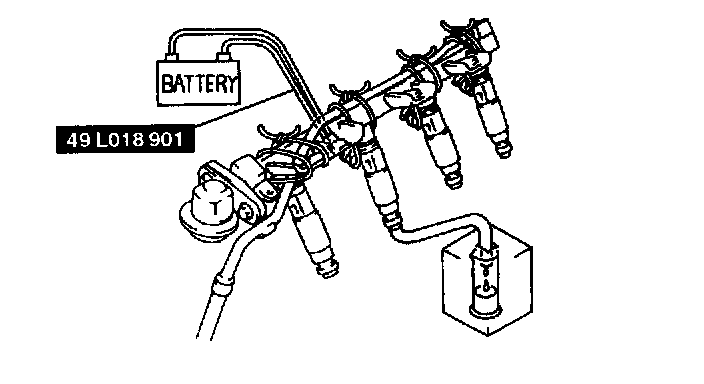

Injector Volume Test
Volume TestWARNING
- Fuel line spills and leaks are dangerous. Fuel can ignite and cause serious injuries or death and damage. Always carry out the following procedure with the engine stopped.
1. Complete the "BEFORE REPAIR PROCEDURE".
2. Disconnect the negative battery cable.
3. Remove the dynamic chamber.
4. Remove the fuel injectors together with the fuel distributor.
5. Fasten the fuel injectors firmly to the fuel distributor with wire and connect the fuel pipe connector.

6. Connect the SST as shown in the figure.
7. Connect the negative battery cable.
CAUTION:
- Connecting the wrong data link connector terminals may possibly cause a malfunction. Carefully connect the specified terminals only.

8. Connect data link connector terminals F/P and GND by using a jumper wire.
9. Turn the ignition switch to ON to operate the fuel pump.
10. Measure the injection volume of each fuel injector by using a graduated container.
Injection volume 66-82 ml (66-82 cc, 2.3-2.7 fl.oz)/15 sec.
11. Turn the ignition switch off and disconnect the jumper wire.
12. If not as specified, replace the fuel injector.
13. Install the dynamic chamber.
14. Complete the "AFTER REPAIR PROCEDURE".